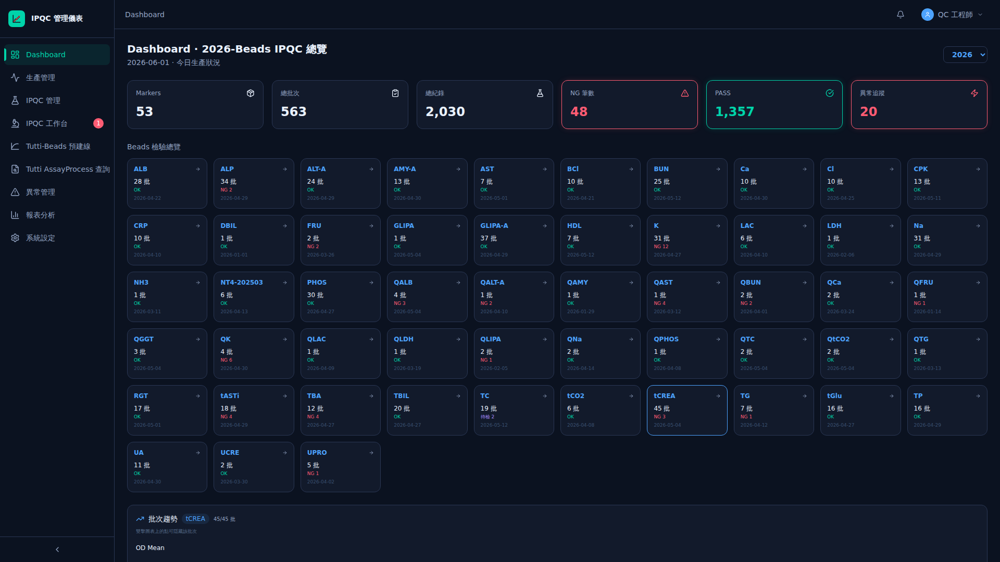
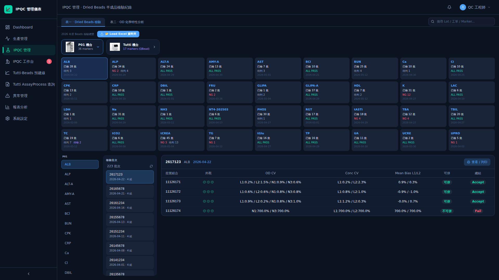
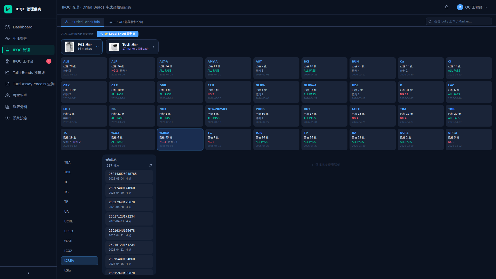
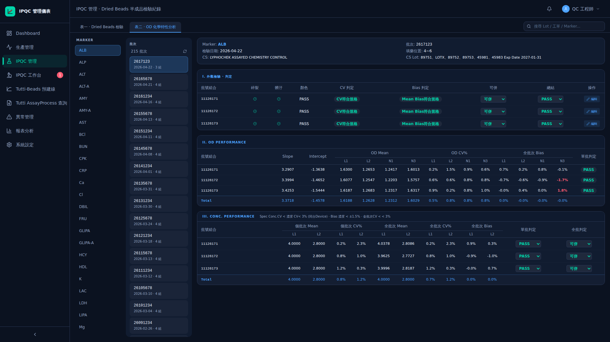
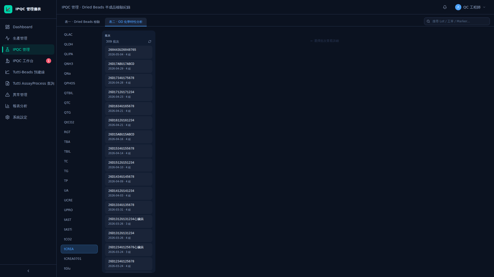
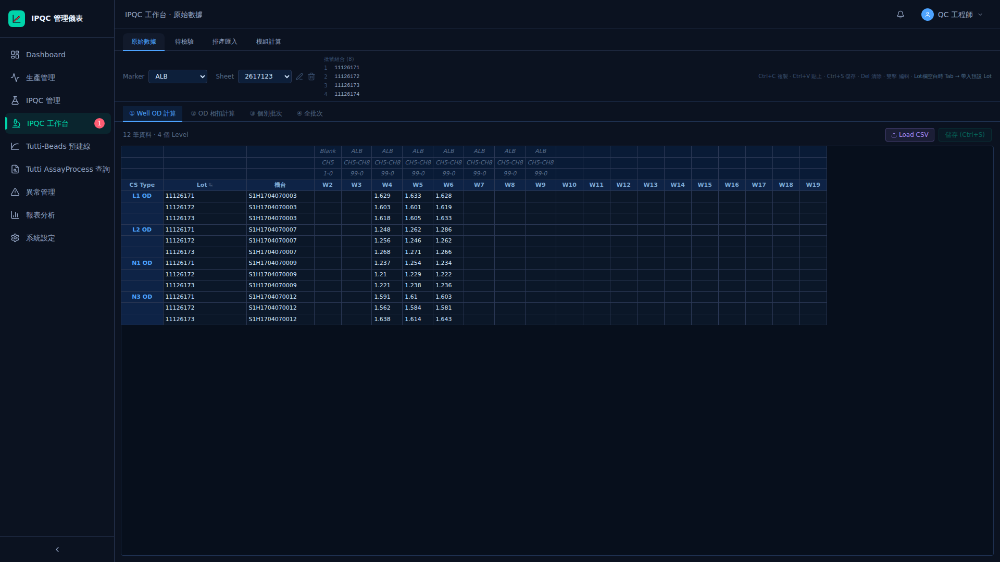
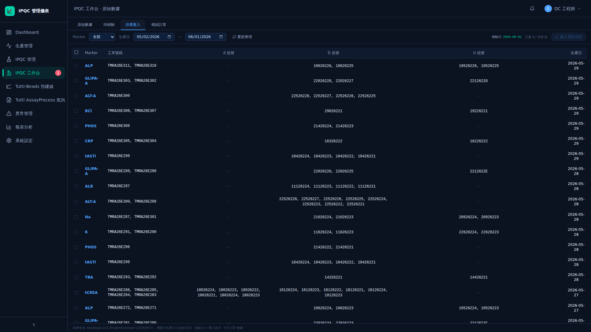
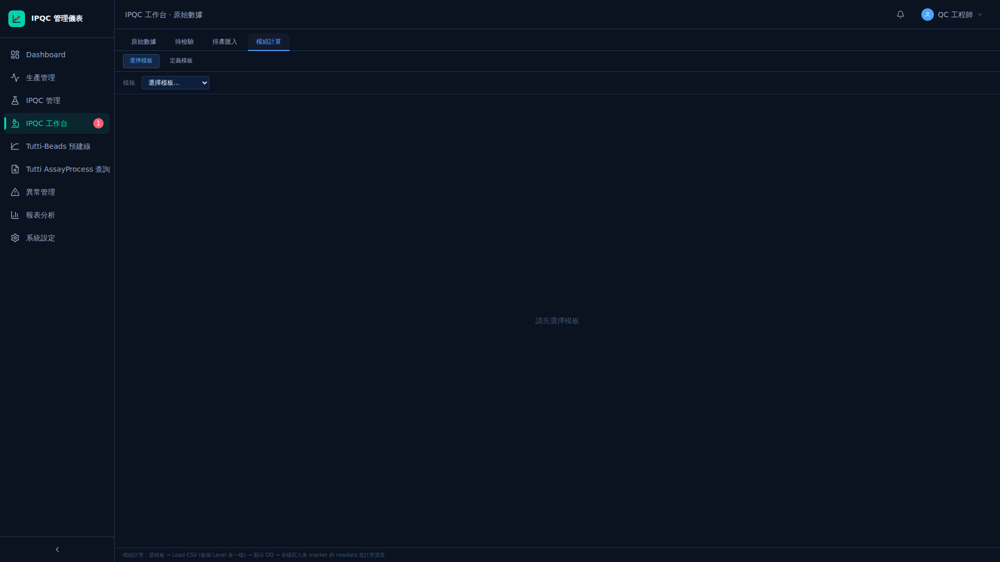
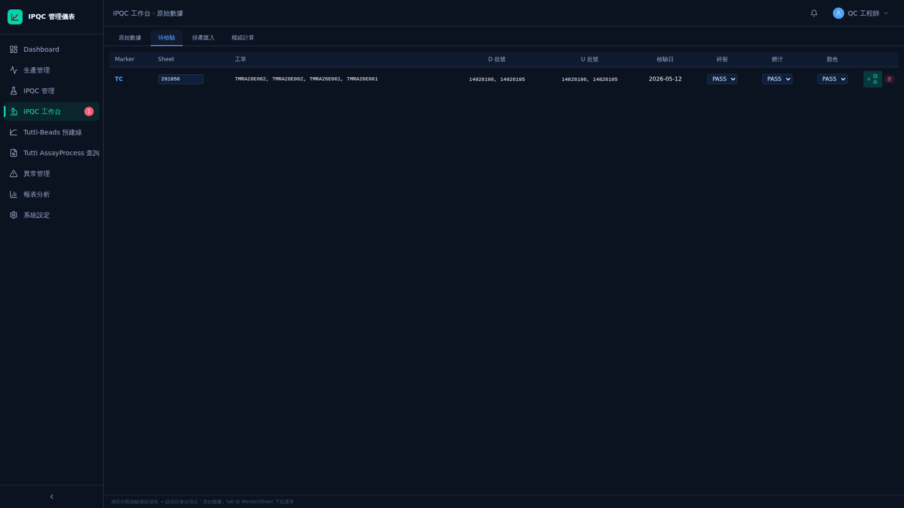

IPQC 管理儀表板
IPQC 管理儀表板提供品質管控的核心功能入口，包含 KPI 摘要卡片、Dried Beads 檢驗資料管理（表一）、OD 化學特性分析（表二）、以及工作站資料匯入功能。透過儀表板，操作人員可即時掌握品質數據並執行日常檢驗作業。
Dashboard 總覽
-
進入 IPQC Dashboard開啟瀏覽器，輸入系統網址進入 IPQC 管理儀表板首頁。頁面載入後將顯示 KPI 摘要卡片與功能模組入口。

-
檢視 KPI 摘要卡片Dashboard 頂部顯示關鍵績效指標（KPI）摘要卡片，包含當日檢驗數量、合格率、待處理項目等即時統計數據。點擊各卡片可快速跳轉至對應的詳細資料頁面。

-
資料更新與重新整理Dashboard 資料會在頁面載入時自動取得最新數據。若需手動更新，可點擊頁面上的重新整理按鈕或使用瀏覽器的重新整理功能（F5），系統將重新載入所有 KPI 數據。
表一 · Dried Beads 檢驗
-
檢視 Dried Beads 檢驗資料點擊 Dashboard 中的「表一」或「Dried Beads 檢驗」入口，進入 Dried Beads 檢驗資料列表。列表以表格形式呈現所有檢驗記錄，包含批號、檢驗日期、檢驗結果等欄位。

-
搜尋特定檢驗記錄使用頁面上方的搜尋欄位，輸入批號或關鍵字進行搜尋。系統將即時篩選並顯示符合條件的檢驗記錄。

-
篩選檢驗資料利用篩選功能依據日期範圍、檢驗狀態或其他條件縮小資料範圍。選擇篩選條件後，表格將自動更新顯示符合條件的記錄。

表二 · OD 化學特性分析
-
匯入 CSV 資料點擊「匯入」按鈕開啟匯入介面，選擇 CSV 格式的 OD 數據檔案進行上傳。系統支援標準 CSV 格式，檔案須包含正確的 OD 讀數欄位。

-
檢視 OD 數值匯入完成後，系統將以表格形式顯示所有 OD 讀數值。可檢視各 well 的原始 OD 數據，確認資料匯入是否正確。

-
濃度轉換分析系統根據匯入的 OD 值與預設的標準曲線參數，自動計算對應的濃度值。轉換結果將顯示於分析報表中，可用於品質判定與趨勢追蹤。

工作站資料匯入
-
開啟資料匯入功能在 Dashboard 中點擊「資料匯入」按鈕，開啟工作站資料匯入介面。

-
選擇匯入檔案點擊「選擇檔案」按鈕，從本機選取要匯入的資料檔案。支援的檔案格式包含：CSV（逗號分隔值）、XLSX（Excel 活頁簿）、XLS（舊版 Excel 格式）。

-
確認匯入格式系統將預覽檔案內容並驗證格式。請確認檔案包含必要的欄位標頭（如 OD 讀數、批號等），格式正確後點擊「確認匯入」執行匯入作業。

-
檢視匯入結果匯入完成後，系統顯示匯入結果摘要，包含成功筆數、失敗筆數及錯誤明細。確認無誤後即完成資料匯入作業。

錯誤處理
檔案格式不支援
若上傳的檔案格式非 CSV、XLSX 或 XLS，系統將顯示「不支援的檔案格式」錯誤訊息。請確認檔案副檔名正確，並重新選擇正確格式的檔案。
檔案內容格式錯誤
若檔案內容缺少必要的欄位標頭或資料格式不符預期，系統將提示「檔案格式錯誤」並列出缺少的欄位。請依照系統提示修正檔案內容後重新匯入。
資料匯入失敗
若匯入過程中發生網路中斷或伺服器錯誤，系統將顯示「匯入失敗」訊息。請確認網路連線正常後重新執行匯入操作。若問題持續，請聯繫系統管理員。
OD 數值超出合理範圍
若匯入的 OD 數值超出系統設定的合理範圍，系統將標記異常數據並顯示警告。請確認原始數據是否正確，必要時重新量測後再匯入。